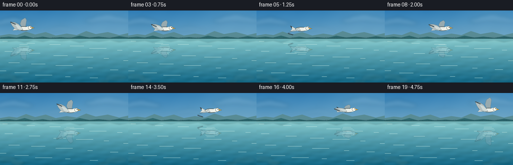
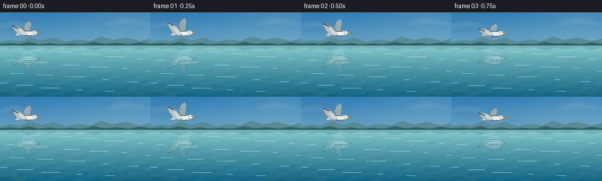

CODING AGENTS AS PIXEL WORLD MODELS
traex/GPT-5.6-Sol · phygen_056
点击播放 · 原生 RGB 像素
逐轮保存的候选
回放视频、检查图与代码变化。
每份候选均可单独播放。实际图片检查记录在下方工具轨迹中。
候选 01播放与检查图
点击播放 · 原生 RGB 像素


展开代码变化
--- 上一保存版本
+++ 本次保存版本
@@ -0,0 +1,221 @@
+from pathlib import Path
+import json, math
+import numpy as np
+from PIL import Image, ImageDraw, ImageFilter
+import artifact_io
+
+CASE_DIR = Path(__file__).resolve().parent
+SPEC = json.loads((CASE_DIR / "task_spec.json").read_text())
+W, H = int(SPEC["width"]), int(SPEC["height"])
+N, FPS = int(SPEC["frames"]), float(SPEC["fps"])
+S = 4 # supersampling for clean small-format edges
+WW, HH = W*S, H*S
+HORIZON = 57*S
+rng = np.random.default_rng(5601)
+
+
+def gradient_rgb(top, bottom, height, width):
+ u = np.linspace(0, 1, height, dtype=np.float32)[:, None, None]
+ a = np.asarray(top, np.float32)[None, None, :]
+ b = np.asarray(bottom, np.float32)[None, None, :]
+ return np.broadcast_to(a*(1-u)+b*u, (height, width, 3)).copy()
+
+
+def scpoly(points):
+ return [(int(round(x*S)), int(round(y*S))) for x, y in points]
+
+
+def soft_cloud(base, cx, cy, sx, sy, alpha=45):
+ layer = Image.new("RGBA", (WW, HH), (0, 0, 0, 0))
+ d = ImageDraw.Draw(layer)
+ blobs = [(-.58,.05,.52,.55),(-.28,-.18,.55,.78),(0,-.28,.62,.90),(.32,-.12,.58,.72),(.62,.06,.48,.52)]
+ for bx, by, bw, bh in blobs:
+ box = ((cx+bx*sx-bw*sx/2)*S, (cy+by*sy-bh*sy/2)*S,
+ (cx+bx*sx+bw*sx/2)*S, (cy+by*sy+bh*sy/2)*S)
+ d.ellipse(tuple(map(int, box)), fill=(243, 249, 244, alpha))
+ layer = layer.filter(ImageFilter.GaussianBlur(3.8*S))
+ base.alpha_composite(layer)
+
+
+def make_background(frame_i):
+ t = frame_i / FPS
+ # Open blue sky with a warm, misty horizon.
+ arr = gradient_rgb((49, 125, 180), (198, 222, 218), HH, WW)
+ y = np.arange(HH, dtype=np.float32)[:, None]
+ x = np.arange(WW, dtype=np.float32)[None, :]
+ glow = np.exp(-(((x-WW*.86)/(WW*.35))**2 + ((y-HH*.04)/(HH*.36))**2))*18
+ arr += glow[..., None] * np.array([1.0, .72, .38], np.float32)
+ # fixed fine atmospheric texture avoids a synthetic flat gradient
+ texture = (np.sin(x*.031 + y*.017) + np.sin(x*.009-y*.023))*0.55
+ arr += texture[...,None]
+ arr = np.clip(arr, 0, 255).astype(np.uint8)
+ im = Image.fromarray(arr, "RGB").convert("RGBA")
+
+ soft_cloud(im, 27-0.15*t, 24, 45, 15, 28)
+ soft_cloud(im, 215-0.10*t, 19, 54, 17, 20)
+ soft_cloud(im, 122-0.12*t, 39, 37, 10, 12)
+
+ # Layered distant ridges establish scale while remaining atmospheric.
+ d = ImageDraw.Draw(im, "RGBA")
+ back = [(0,57),(0,50),(18,47),(34,49),(52,42),(70,48),(91,43),(111,50),
+ (133,46),(153,49),(172,41),(191,47),(215,43),(238,49),(256,45),(256,59)]
+ d.polygon(scpoly(back), fill=(89, 139, 148, 175))
+ front = [(0,58),(0,54),(17,52),(33,54),(49,50),(67,55),(85,52),(101,55),
+ (121,53),(140,55),(159,50),(178,54),(197,52),(219,55),(238,51),(256,54),(256,60)]
+ d.polygon(scpoly(front), fill=(50, 106, 113, 205))
+ # Thin wooded shoreline silhouettes.
+ for k in range(0, 257, 3):
+ ht = 1.5 + 2.2*(0.5+0.5*math.sin(k*.37))
+ d.line([(k*S, 57*S), (k*S, int((57-ht)*S))], fill=(35,82,82,150), width=max(1,S//2))
+ d.line([(0,HORIZON),(WW,HORIZON)], fill=(204,226,211,150), width=S)
+
+ # Replace lower region with transparent-looking turquoise lake.
+ wh = HH-HORIZON
+ water = gradient_rgb((128, 193, 198), (22, 104, 133), wh, WW)
+ yy = np.arange(wh, dtype=np.float32)[:, None]
+ xx = np.arange(WW, dtype=np.float32)[None, :]
+ # Calm, elongated interference pattern. Its phase drifts very slowly.
+ rip = (np.sin(xx*.030 + yy*.105 + t*.55) +
+ .60*np.sin(xx*.010 - yy*.178 - t*.31) +
+ .35*np.sin(xx*.071 + yy*.045 + t*.22))
+ strength = 1.5 + 2.8*(yy/wh)
+ water += rip[...,None]*strength[...,None]*np.array([.42,.68,.90],np.float32)
+ # Soft horizon reflection band.
+ haze = np.exp(-yy/(12*S))*14
+ water += haze[...,None]*np.array([1.0, .95, .72],np.float32)
+ water = np.clip(water,0,255).astype(np.uint8)
+ im.paste(Image.fromarray(water,"RGB").convert("RGBA"), (0,HORIZON))
+
+ # Mirrored mountain silhouettes, softened by the surface.
+ refl = Image.new("RGBA", (WW, HH), (0,0,0,0))
+ rd = ImageDraw.Draw(refl, "RGBA")
+ mref = [(x, 2*57-y) for x,y in front]
+ rd.polygon(scpoly(mref), fill=(45,112,125,70))
+ refl = refl.filter(ImageFilter.GaussianBlur(1.2*S))
+ im.alpha_composite(refl)
+
+ # Clear-water foreground: barely visible stones beneath the blue water.
+ under = Image.new("RGBA", (WW,HH),(0,0,0,0)); ud=ImageDraw.Draw(under,"RGBA")
+ stones=[(13,132,19,6,(91,119,104,30)),(35,139,13,5,(150,137,105,24)),
+ (232,134,22,7,(98,118,102,26)),(206,141,12,4,(165,144,110,18))]
+ for cx,cy,rx,ry,col in stones:
+ ud.ellipse(((cx-rx)*S,(cy-ry)*S,(cx+rx)*S,(cy+ry)*S),fill=col)
+ under=under.filter(ImageFilter.GaussianBlur(2.0*S)); im.alpha_composite(under)
+
+ # Long, sparse highlights convey a calm rather than choppy surface.
+ wd = ImageDraw.Draw(im, "RGBA")
+ for j in range(22):
+ py = 61 + j*3.55 + 0.9*math.sin(j*1.71+t*.25)
+ cx = (17 + j*47 + 6*math.sin(j*.9)) % 270 - 7
+ length = 5 + (j%5)*3
+ a = 28 if py < 95 else 18
+ wd.line([(int((cx-length)*S),int(py*S)),(int((cx+length)*S),int(py*S))],
+ fill=(205,239,232,a), width=max(1,S//2))
+ return im
+
+
+def bird_layer(frame_i):
+ t = frame_i / FPS
+ phase = 2*math.pi*(2.35*t/5.0 + .10)
+ flap = math.sin(phase)
+ # smooth left-to-right glide, with a natural, restrained vertical bob
+ ease = frame_i/(N-1)
+ cx = 47 + 160*ease
+ cy = 35.5 + 1.25*math.sin(2*math.pi*(ease*.72+.08)) - .45*flap
+ layer = Image.new("RGBA", (WW,HH),(0,0,0,0))
+ d = ImageDraw.Draw(layer, "RGBA")
+ def P(points): return [((cx+x)*S,(cy+y)*S) for x,y in points]
+ # far wing, slightly blue-grey from skylight
+ far=[(-3,-1),(-7,-5-7*flap),(-4,-10-12*flap),(3,-13-14*flap),
+ (6,-10-12*flap),(4,-3-3*flap),(5,1)]
+ d.polygon(P(far), fill=(151,169,174,255), outline=(72,94,101,235))
+ # tail behind body
+ d.polygon(P([(-11,-1),(-20,-6),(-18,0),(-22,4),(-9,3)]),
+ fill=(213,220,216,255), outline=(77,91,93,230))
+ d.polygon(P([(-18,-5),(-22,-7),(-19,-1)]), fill=(55,66,70,235))
+ # streamlined white body
+ d.ellipse(((cx-12)*S,(cy-4.1)*S,(cx+13)*S,(cy+4.6)*S),
+ fill=(232,236,229,255), outline=(70,84,87,255), width=S)
+ d.polygon(P([(5,-3),(12,-5),(17,-2),(12,3),(5,3)]), fill=(239,241,232,255))
+ # near wing with separately readable primary feathers
+ tipy = -5 - 14*flap
+ near=[(-4,-2),(-10,-5-6*flap),(-17,-6-10*flap),(-27,tipy),
+ (-23,-1-8*flap),(-18,2-3*flap),(-9,4),(-1,3)]
+ d.polygon(P(near), fill=(178,190,190,255), outline=(63,78,82,255))
+ # pale covert panel and dark primary tips
+ d.polygon(P([(-3,-1),(-10,-3-5*flap),(-17,-4-7*flap),(-11,1),(-3,3)]),
+ fill=(215,220,214,235))
+ feather_base = tipy
+ for q in range(4):
+ x0=-27+q*2.6
+ y0=feather_base + q*(1.0+0.25*flap)
+ d.polygon(P([(x0,y0),(x0+4.2,y0+.8),(x0+2.0,y0+2.3)]), fill=(48,61,65,235))
+ # head, eye and warm beak
+ d.ellipse(((cx+9)*S,(cy-5.2)*S,(cx+17)*S,(cy+2.2)*S),
+ fill=(240,241,230,255), outline=(68,81,83,255), width=max(1,S//2))
+ d.polygon(P([(16,-2.8),(22,-1.0),(16,.2)]), fill=(216,164,61,255), outline=(87,71,42,240))
+ d.ellipse(((cx+13.6)*S,(cy-3.35)*S,(cx+15.0)*S,(cy-1.95)*S), fill=(20,27,28,255))
+ # subtle lower-body shade anchors the form
+ d.arc(((cx-11)*S,(cy-3)*S,(cx+12)*S,(cy+5)*S), 8, 171, fill=(115,137,139,150), width=max(1,S//2))
+ return layer
+
+
+def reflected_bird(bird, frame_i):
+ src=np.asarray(bird).copy()
+ out=np.zeros_like(src)
+ # Exact vertical optical alignment about the lake horizon.
+ for yt in range(HORIZON, HH):
+ ys=2*HORIZON-yt
+ if 0 <= ys < HH:
+ out[yt]=src[ys]
+ t=frame_i/FPS
+ warped=np.zeros_like(out)
+ # Low-amplitude row displacement makes it unmistakably a water reflection.
+ for y in range(HORIZON,HH):
+ dy=(y-HORIZON)/S
+ shift=int(round(S*(.45*math.sin(dy*.62+t*1.0)+.24*math.sin(dy*1.31-t*.45))))
+ warped[y]=np.roll(out[y],shift,axis=0)
+ fade=.62*math.exp(-dy/105.0)
+ stripe=.78+.22*math.sin(dy*2.7+.4)
+ warped[y,:,3]=(warped[y,:,3].astype(np.float32)*fade*stripe).astype(np.uint8)
+ # blue-green tint from the water column
+ mask=warped[y,:,3]>0
+ if np.any(mask):
+ rgb=warped[y,:,0:3].astype(np.float32)
+ rgb[mask]=rgb[mask]*np.array([.66,.76,.79])+np.array([24,35,39])
+ warped[y,:,0:3]=np.clip(rgb,0,255).astype(np.uint8)
+ return Image.fromarray(warped,"RGBA").filter(ImageFilter.GaussianBlur(.42*S))
+
+
+def add_surface_accents(im, frame_i, bird):
+ # A few hairline wavelets cross the mirrored silhouette, integrating it into the lake.
+ t=frame_i/FPS; d=ImageDraw.Draw(im,"RGBA")
+ ease=frame_i/(N-1); bx=47+160*ease
+ for k in range(7):
+ py=68+k*3.15 + .45*math.sin(t*.6+k)
+ half=8+2*(k%3)
+ xoff=1.2*math.sin(k*2.1+t)
+ d.line([((bx+xoff-half)*S,py*S),((bx+xoff+half)*S,py*S)],
+ fill=(196,229,223,32 if k%2 else 46),width=max(1,S//2))
+
+
+def render_frame(i):
+ scene=make_background(i)
+ bird=bird_layer(i)
+ scene.alpha_composite(reflected_bird(bird,i))
+ add_surface_accents(scene,i,bird)
+ scene.alpha_composite(bird)
+ # final optical downsample and a tiny contrast lift
+ rgb=scene.convert("RGB").resize((W,H),Image.Resampling.LANCZOS)
+ a=np.asarray(rgb).astype(np.float32)
+ a=(a-128)*1.025+128
+ return np.clip(a,0,255).astype(np.uint8)
+
+
+def main():
+ frames=np.stack([render_frame(i) for i in range(N)],axis=0)
+ artifact_io.save(frames, CASE_DIR)
+ print(f"saved {frames.shape} {frames.dtype}; range={frames.min()}..{frames.max()}")
+
+if __name__ == "__main__":
+ main()
可观测工具轨迹
实际执行的命令与返回图片。
命令 1exit 0
/bin/bash -lc "cat prompt.txt && printf '\\n--- GENERATION_RULES.md ---\\n' && cat GENERATION_RULES.md && printf '\\n--- task_spec.json ---\\n' && cat task_spec.json"
命令 2exit 0
/bin/bash -lc "find . -maxdepth 2 -type f -printf '%p\\n' | sort && printf '\\n--- tools ---\\n' && command -v ffmpeg || true && command -v blender || true && command -v python3 || true"
命令 3exit 0
/bin/bash -lc 'cat artifact_io.py'
命令 4exit 0
/bin/bash -lc "cat > generate.py <<'PY'
from pathlib import Path
import json, math
import numpy as np
from PIL import Image, ImageDraw, ImageFilter
import artifact_io
CASE_DIR = Path(__file__).resolve().parent
SPEC = json.loads((CASE_DIR / \"task_spec.json\").read_text())
W, H = int(SPEC[\"width\"]), int(SPEC[\"height\"])
N, FPS = int(SPEC[\"frames\"]), float(SPEC[\"fps\"])
S = 4 # supersampling for clean small-format edges
WW, HH = W*S, H*S
HORIZON = 57*S
rng = np.random.default_rng(5601)
def gradient_rgb(top, bottom, height, width):
u = np.linspace(0, 1, height, dtype=np.float32)[:, None, None]
a = np.asarray(top, np.float32)[None, None, :]
b = np.asarray(bottom, np.float32)[None, None, :]
return np.broadcast_to(a*(1-u)+b*u, (height, width, 3)).copy()
def scpoly(points):
return [(int(round(x*S)), int(round(y*S))) for x, y in points]
def soft_cloud(base, cx, cy, sx, sy, alpha=45):
layer = Image.new(\"RGBA\", (WW, HH), (0, 0, 0, 0))
d = ImageDraw.Draw(layer)
blobs = [(-.58,.05,.52,.55),(-.28,-.18,.55,.78),(0,-.28,.62,.90),(.32,-.12,.58,.72),(.62,.06,.48,.52)]
for bx, by, bw, bh in blobs:
box = ((cx+bx*sx-bw*sx/2)*S, (cy+by*sy-bh*sy/2)*S,
(cx+bx*sx+bw*sx/2)*S, (cy+by*sy+bh*sy/2)*S)
d.ellipse(tuple(map(int, box)), fill=(243, 249, 244, alpha))
layer = layer.filter(ImageFilter.GaussianBlur(3.8*S))
base.alpha_composite(layer)
def make_background(frame_i):
t = frame_i / FPS
# Open blue sky with a warm, misty horizon.
arr = gradient_rgb((49, 125, 180), (198, 222, 218), HH, WW)
y = np.arange(HH, dtype=np.float32)[:, None]
x = np.arange(WW, dtype=np.float32)[None, :]
glow = np.exp(-(((x-WW*.86)/(WW*.35))**2 + ((y-HH*.04)/(HH*.36))**2))*18
arr += glow[..., None] * np.array([1.0, .72, .38], np.float32)
# fixed fine atmospheric texture avoids a synthetic flat gradient
texture = (np.sin(x*.031 + y*.017) + np.sin(x*.009-y*.023))*0.55
arr += texture[...,None]
arr = np.clip(arr, 0, 255).astype(np.uint8)
im = Image.fromarray(arr, \"RGB\").convert(\"RGBA\")
soft_cloud(im, 27-0.15*t, 24, 45, 15, 28)
soft_cloud(im, 215-0.10*t, 19, 54, 17, 20)
soft_cloud(im, 122-0.12*t, 39, 37, 10, 12)
# Layered distant ridges establish scale while remaining atmospheric.
d = ImageDraw.Draw(im, \"RGBA\")
back = [(0,57),(0,50),(18,47),(34,49),(52,42),(70,48),(91,43),(111,50),
(133,46),(153,49),(172,41),(191,47),(215,43),(238,49),(256,45),(256,59)]
d.polygon(scpoly(back), fill=(89, 139, 148, 175))
front = [(0,58),(0,54),(17,52),(33,54),(49,50),(67,55),(85,52),(101,55),
(121,53),(140,55),(159,50),(178,54),(197,52),(219,55),(238,51),(256,54),(256,60)]
d.polygon(scpoly(front), fill=(50, 106, 113, 205))
# Thin wooded shoreline silhouettes.
for k in range(0, 257, 3):
ht = 1.5 + 2.2*(0.5+0.5*math.sin(k*.37))
d.line([(k*S, 57*S), (k*S, int((57-ht)*S))], fill=(35,82,82,150), width=max(1,S//2))
d.line([(0,HORIZON),(WW,HORIZON)], fill=(204,226,211,150), width=S)
# Replace lower region with transparent-looking turquoise lake.
wh = HH-HORIZON
water = gradient_rgb((128, 193, 198), (22, 104, 133), wh, WW)
yy = np.arange(wh, dtype=np.float32)[:, None]
xx = np.arange(WW, dtype=np.float32)[None, :]
# Calm, elongated interference pattern. Its phase drifts very slowly.
rip = (np.sin(xx*.030 + yy*.105 + t*.55) +
.60*np.sin(xx*.010 - yy*.178 - t*.31) +
.35*np.sin(xx*.071 + yy*.045 + t*.22))
strength = 1.5 + 2.8*(yy/wh)
water += rip[...,None]*strength[...,None]*np.array([.42,.68,.90],np.float32)
# Soft horizon reflection band.
haze = np.exp(-yy/(12*S))*14
water += haze[...,None]*np.array([1.0, .95, .72],np.float32)
water = np.clip(water,0,255).astype(np.uint8)
im.paste(Image.fromarray(water,\"RGB\").convert(\"RGBA\"), (0,HORIZON))
# Mirrored mountain silhouettes, softened by the surface.
refl = Image.new(\"RGBA\", (WW, HH), (0,0,0,0))
rd = ImageDraw.Draw(refl, \"RGBA\")
mref = [(x, 2*57-y) for x,y in front]
rd.polygon(scpoly(mref), fill=(45,112,125,70))
refl = refl.filter(ImageFilter.GaussianBlur(1.2*S))
im.alpha_composite(refl)
# Clear-water foreground: barely visible stones beneath the blue water.
under = Image.new(\"RGBA\", (WW,HH),(0,0,0,0)); ud=ImageDraw.Draw(under,\"RGBA\")
stones=[(13,132,19,6,(91,119,104,30)),(35,139,13,5,(150,137,105,24)),
(232,134,22,7,(98,118,102,26)),(206,141,12,4,(165,144,110,18))]
for cx,cy,rx,ry,col in stones:
ud.ellipse(((cx-rx)*S,(cy-ry)*S,(cx+rx)*S,(cy+ry)*S),fill=col)
under=under.filter(ImageFilter.GaussianBlur(2.0*S)); im.alpha_composite(under)
# Long, sparse highlights convey a calm rather than choppy surface.
wd = ImageDraw.Draw(im, \"RGBA\")
for j in range(22):
py = 61 + j*3.55 + 0.9*math.sin(j*1.71+t*.25)
cx = (17 + j*47 + 6*math.sin(j*.9)) % 270 - 7
length = 5 + (j%5)*3
a = 28 if py < 95 else 18
wd.line([(int((cx-length)*S),int(py*S)),(int((cx+length)*S),int(py*S))],
fill=(205,239,232,a), width=max(1,S//2))
return im
def bird_layer(frame_i):
t = frame_i / FPS
phase = 2*math.pi*(2.35*t/5.0 + .10)
flap = math.sin(phase)
# smooth left-to-right glide, with a natural, restrained vertical bob
ease = frame_i/(N-1)
cx = 47 + 160*ease
cy = 35.5 + 1.25*math.sin(2*math.pi*(ease*.72+.08)) - .45*flap
layer = Image.new(\"RGBA\", (WW,HH),(0,0,0,0))
d = ImageDraw.Draw(layer, \"RGBA\")
def P(points): return [((cx+x)*S,(cy+y)*S) for x,y in points]
# far wing, slightly blue-grey from skylight
far=[(-3,-1),(-7,-5-7*flap),(-4,-10-12*flap),(3,-13-14*flap),
(6,-10-12*flap),(4,-3-3*flap),(5,1)]
d.polygon(P(far), fill=(151,169,174,255), outline=(72,94,101,235))
# tail behind body
d.polygon(P([(-11,-1),(-20,-6),(-18,0),(-22,4),(-9,3)]),
fill=(213,220,216,255), outline=(77,91,93,230))
d.polygon(P([(-18,-5),(-22,-7),(-19,-1)]), fill=(55,66,70,235))
# streamlined white body
d.ellipse(((cx-12)*S,(cy-4.1)*S,(cx+13)*S,(cy+4.6)*S),
fill=(232,236,229,255), outline=(70,84,87,255), width=S)
d.polygon(P([(5,-3),(12,-5),(17,-2),(12,3),(5,3)]), fill=(239,241,232,255))
# near wing with separately readable primary feathers
tipy = -5 - 14*flap
near=[(-4,-2),(-10,-5-6*flap),(-17,-6-10*flap),(-27,tipy),
(-23,-1-8*flap),(-18,2-3*flap),(-9,4),(-1,3)]
d.polygon(P(near), fill=(178,190,190,255), outline=(63,78,82,255))
# pale covert panel and dark primary tips
d.polygon(P([(-3,-1),(-10,-3-5*flap),(-17,-4-7*flap),(-11,1),(-3,3)]),
fill=(215,220,214,235))
feather_base = tipy
for q in range(4):
x0=-27+q*2.6
y0=feather_base + q*(1.0+0.25*flap)
d.polygon(P([(x0,y0),(x0+4.2,y0+.8),(x0+2.0,y0+2.3)]), fill=(48,61,65,235))
# head, eye and warm beak
d.ellipse(((cx+9)*S,(cy-5.2)*S,(cx+17)*S,(cy+2.2)*S),
fill=(240,241,230,255), outline=(68,81,83,255), width=max(1,S//2))
d.polygon(P([(16,-2.8),(22,-1.0),(16,.2)]), fill=(216,164,61,255), outline=(87,71,42,240))
d.ellipse(((cx+13.6)*S,(cy-3.35)*S,(cx+15.0)*S,(cy-1.95)*S), fill=(20,27,28,255))
# subtle lower-body shade anchors the form
d.arc(((cx-11)*S,(cy-3)*S,(cx+12)*S,(cy+5)*S), 8, 171, fill=(115,137,139,150), width=max(1,S//2))
return layer
def reflected_bird(bird, frame_i):
src=np.asarray(bird).copy()
out=np.zeros_like(src)
# Exact vertical optical alignment about the lake horizon.
for yt in range(HORIZON, HH):
ys=2*HORIZON-yt
if 0 <= ys < HH:
out[yt]=src[ys]
t=frame_i/FPS
warped=np.zeros_like(out)
# Low-amplitude row displacement makes it unmistakably a water reflection.
for y in range(HORIZON,HH):
dy=(y-HORIZON)/S
shift=int(round(S*(.45*math.sin(dy*.62+t*1.0)+.24*math.sin(dy*1.31-t*.45))))
warped[y]=np.roll(out[y],shift,axis=0)
fade=.62*math.exp(-dy/105.0)
stripe=.78+.22*math.sin(dy*2.7+.4)
warped[y,:,3]=(warped[y,:,3].astype(np.float32)*fade*stripe).astype(np.uint8)
# blue-green tint from the water column
mask=warped[y,:,3]>0
if np.any(mask):
rgb=warped[y,:,0:3].astype(np.float32)
rgb[mask]=rgb[mask]*np.array([.66,.76,.79])+np.array([24,35,39])
warped[y,:,0:3]=np.clip(rgb,0,255).astype(np.uint8)
return Image.fromarray(warped,\"RGBA\").filter(ImageFilter.GaussianBlur(.42*S))
def add_surface_accents(im, frame_i, bird):
# A few hairline wavelets cross the mirrored silhouette, integrating it into the lake.
t=frame_i/FPS; d=ImageDraw.Draw(im,\"RGBA\")
ease=frame_i/(N-1); bx=47+160*ease
for k in range(7):
py=68+k*3.15 + .45*math.sin(t*.6+k)
half=8+2*(k%3)
xoff=1.2*math.sin(k*2.1+t)
d.line([((bx+xoff-half)*S,py*S),((bx+xoff+half)*S,py*S)],
fill=(196,229,223,32 if k%2 else 46),width=max(1,S//2))
def render_frame(i):
scene=make_background(i)
bird=bird_layer(i)
scene.alpha_composite(reflected_bird(bird,i))
add_surface_accents(scene,i,bird)
scene.alpha_composite(bird)
# final optical downsample and a tiny contrast lift
rgb=scene.convert(\"RGB\").resize((W,H),Image.Resampling.LANCZOS)
a=np.asarray(rgb).astype(np.float32)
a=(a-128)*1.025+128
return np.clip(a,0,255).astype(np.uint8)
def main():
frames=np.stack([render_frame(i) for i in range(N)],axis=0)
artifact_io.save(frames, CASE_DIR)
print(f\"saved {frames.shape} {frames.dtype}; range={frames.min()}..{frames.max()}\")
if __name__ == \"__main__\":
main()
PY
python3 generate.py"命令 5exit 0
/bin/bash -lc "python3 - <<'PY'
import numpy as np
from pathlib import Path
from PIL import Image
p=np.load('pixels.npz')['pixels']
assert p.shape==(144,256,20),p.shape
assert p.dtype==np.uint32,p.dtype
rgb=np.empty((20,144,256,3),np.uint8)
q=p.transpose(2,0,1)
rgb[...,0]=(q>>16)&255; rgb[...,1]=(q>>8)&255; rgb[...,2]=q&255
print('packed:',p.shape,p.dtype,'rgb:',rgb.shape,rgb.dtype)
print('frame means:',np.round(rgb.mean((1,2,3)),2).tolist())
print('adjacent MAE:',np.round(np.abs(np.diff(rgb.astype(float),axis=0)).mean((1,2,3)),3).tolist())
print('unique frames:',len({x.tobytes() for x in rgb}))
print('files:',len(list(Path('frames').glob('*.png'))),'png frames')
for f in ['pixels.npz','inspection.png','transition_check.png','index.html','generate.py']:
print(f,Path(f).stat().st_size)
# Verify decoded saved PNG identity.
for i in (0,5,10,15,19):
a=np.asarray(Image.open(f'frames/{i:02d}.png'))
assert np.array_equal(a,rgb[i])
print('PNG round-trip: exact')
PY
python3 generate.py >/tmp/regen.log 2>&1
sha256sum pixels.npz frames/00.png frames/19.png generate.py
cat /tmp/regen.log | tail -1"命令 6exit 0
/bin/bash -lc 'set -e
before=$(sha256sum frames/00.png frames/10.png frames/19.png | awk '"'{print "'$1}'"' | tr '\\n' ' ')
python3 generate.py > .tmp/regen.log 2>&1
after="'$(sha256sum frames/00.png frames/10.png frames/19.png | awk '"'{print "'$1}'"' | tr '\\n' ' ')
printf 'deterministic=%s\\n' \""'$([ "$before" = "$after" ] && echo yes || echo no)"
tail -1 .tmp/regen.log
python3 - <<'"'PY'
import json, numpy as np
from PIL import Image
s=json.load(open('task_spec.json'))
a=np.stack([np.asarray(Image.open(f'frames/{i:02}.png')) for i in range(20)])
assert a.shape==(s['frames'],s['height'],s['width'],3) and a.dtype==np.uint8
# Bird and its reflection should both have strong local contrast at their expected tracks.
for i in [0,5,10,15,19]:
x=round(47+160*i/19)
sky=a[i,16:53,max(0,x-34):min(256,x+27)].astype(float)
water=a[i,61:101,max(0,x-34):min(256,x+27)].astype(float)
print(i,'x',x,'sky contrast',round(sky.std(),1),'reflection contrast',round(water.std(),1))
print('contract and semantic-track checks passed')
PY"保存候选 1 份；完成命令 6 次；可验证图片返回 0 张。原始 API 响应与完整日志保留在本地。